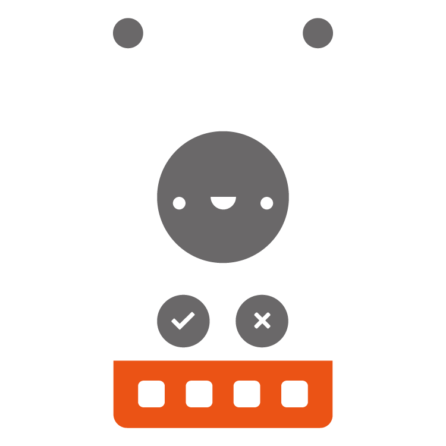
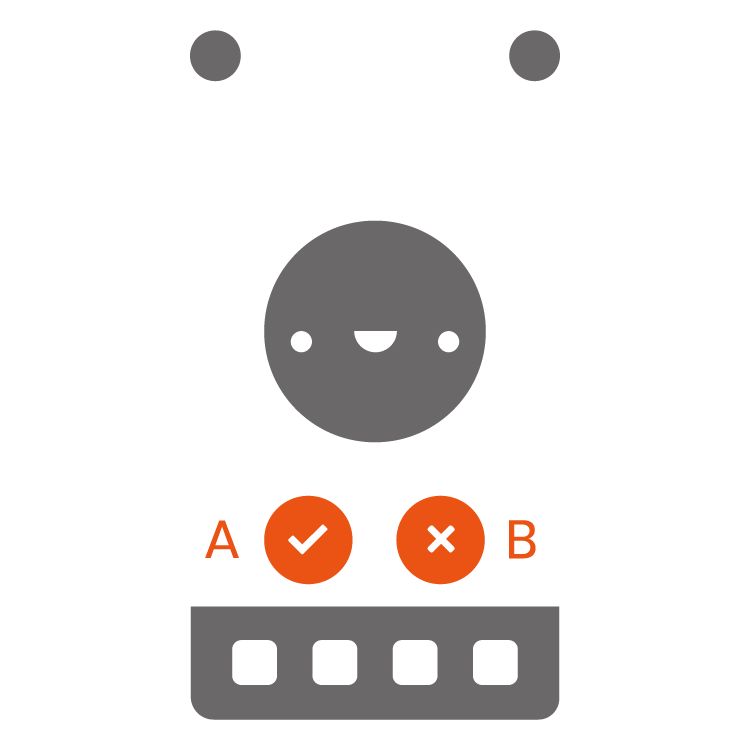
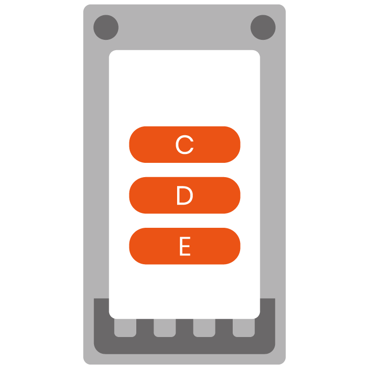
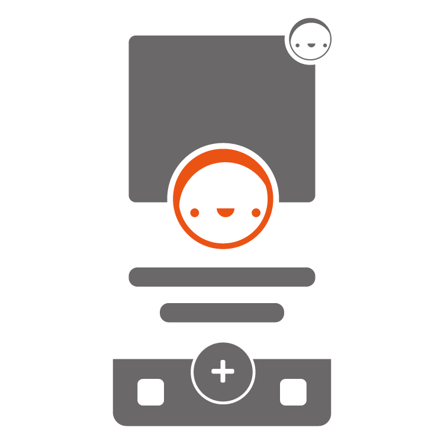

1
Dal menu in basso, seleziona le caratteristiche del mini che vuoi utilizzare (testa, occhi, bocca e mani)
2
Cliccando su uno dei due pulsanti è possibile: (A) Procedere al salvataggio, oppure con (B) ricominciare il mini da capo
3
Dalla schermata che si apre selezionare se effettuare il download dell'immagine (C), ricominciare la creazione (D) o visitare il profilo utente (E)
4
Visita il tuo profilo sul sito (oppure clicca qui), clicca sull'ingranaggio a destra del profilo e nella nuova pagina aperta sull'immagine del profilo